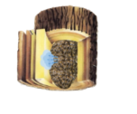
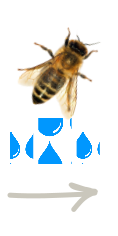
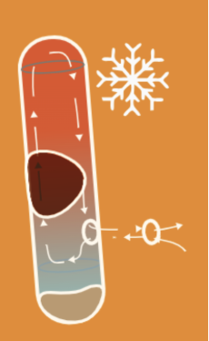
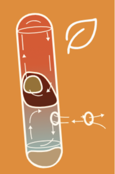
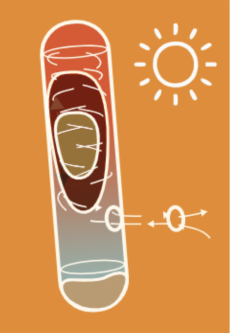

REPLICATING THE CONDITIONS OF A
300-YEAR-OLD TREE CAVITY
Artgerecht. Nach dem Vorbild der Natur.
Woran erkennen wir, ob unsere Bienen wirklich gesund leben? Nicht durch schnellen Blick oder reine Honigleistung – sondern durch das Beobachten natürlicher Verhaltensweisen und Energieverbrauch. In freier Wildbahn zeigt sich: Baumhöhlen bieten ideale Bedingungen, die das Überleben mit minimalem Aufwand ermöglichen. HIIVE macht sich genau dieses physikalische Prinzip zunutze – und überträgt es in die Imkerei. Das Ergebnis: ein habitatgerechtes Zuhause, in dem Bienen natürlich leben, Energie sparen und ihre Widerstandskraft entfalten können
HIIVE at a Glance
Key Benefits for Beekeepers & Researchers
True species-appropriate beekeeping.
Enables natural energy-saving
Behavier of bees
Behavier of bees
Drastically reduces bees’ energy
expenditure
expenditure
Supports bee resilience through targeted
stress reduction
stress reduction
Ergonomic like no other
yet it replicates a 300-year-old tree.
yet it replicates a 300-year-old tree.
Supports common health checks and
Varroa treatments.
Varroa treatments.
Fosters robust, adaptable
colonies
colonies

Tree Hollow as Standard
What advantages does nature
offer Apis mellifera?
Stable insulation with consistent
thermal performance!
thermal performance!
Moisture plays a crucial role in the insulation properties of materials, which is why effective moisture management is vital. Additionally, bees generate considerable moisture pressure in their environment due to their heat and activity. Therefore, log hives are not the same as tree cavities!
living wood

oak wood in
winter 0,2 - 0,3 W/(m·K)
winter 0,2 - 0,3 W/(m·K)
TIn winter, bees exert a constant diffusion pressure on the surrounding walls. Living wood absorbs the moisture that forms and transports it through the xylem flow down to the roots. This ensures that the insulation effect remains constant.
dead wood

dry oak wood
0,15 W/(m·K)
0,15 W/(m·K)
wet oak wood
0,4-0,6W/(mK)
Dead wood, on the other hand, has a very limited ability to absorb moisture. It can only store a small amount and loses insulation performance with each additional water retention, as the moisture cannot be effectively drained or evaporated.
An energy-efficient geometry!
This special geometry is not formed by a woodpecker, but by a fungus that enters through a broken branch and grows upwards with water. The resulting narrow, cylindrical space allows the bees to use dynamic mechanisms to increase their energy efficiency, while also serving as a long-term nesting site

As is well known,
bees form a heat
plug in a cylinder
during winter to
separate warm and
cold air. We observed
in HIIVE that they
adjust the size of the
exhaust opening
depending on the
outside temperature.

In early spring, when
crocuses, snowdrops,
and winter aconites
bloom and nighttime
temperatures still
drop below freezing,
we observed that the
bees completely seal
the tube to retain
warmth for the
brood.

In summer, the bees
whirl cylindrically like
a cyclone. Compared
to box hives, this
system (also thanks
to the insulation) has
significantly fewer
workers engaged in
the fresh air
circulation.
HONEY = ENERGY
Combined, these factors drastically reduce the bees’ effort to regulate the hive’s climate — a crucial advantage for survival
5-7kg
Tree cavity:
Honey consumption over winter
15-25kg
Box hives:
Honey consumption over winter
Species-appropriate
How does HIIVE make a
difference for your bees?
ENABLES NATURAL BEE BEHAVIOR
TO SAFE SIGNIFICANT ENERGY
TO SAFE SIGNIFICANT ENERGY
HIIVE replicates the tree cavity features outlined earlier — enabling bees’ natural energy-saving behavior. Its geometry is based on the research of biologist Thomas Seeley, a leading expert in honeybee ecology. Combined with hemp wool insulation and a moisture-regulating barrier, HIIVE creates a stable Insulation YEAR-ROUND — just like a 300-year-old tree.
BIENEN MÜSSEN
DAS GANZE JAHR
ÜBER AM KLIMA
IM STOCK
ARBEITEN